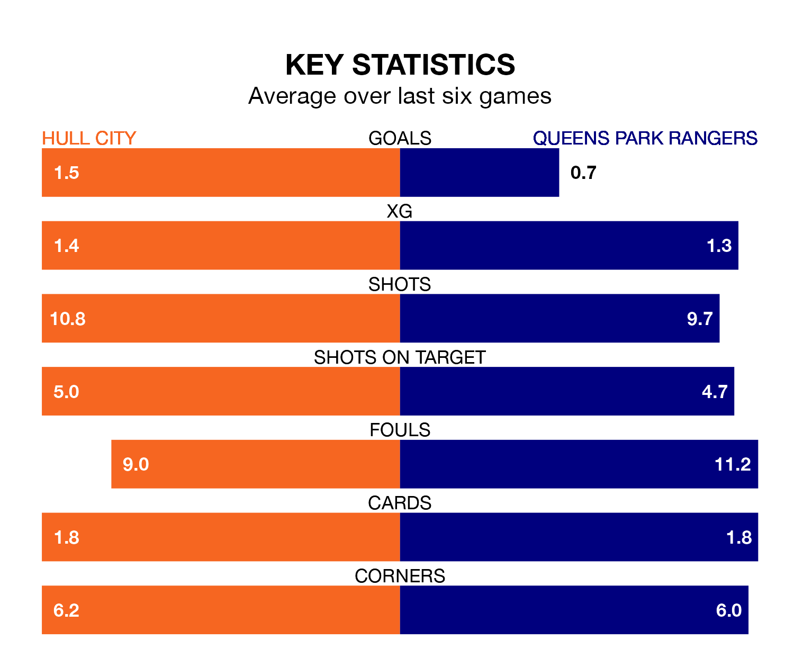

Queens Park Rangers travel to Hull City on Saturday in EFL Championship.
The visitors come into the game on the back of a draw in their last match, having tied with Plymouth Argyle 1-1 away, with a goal from Sam Field.
The Tigers also drew their last match, 2-2 against Middlesbrough, with their goals scored by Jean Michaël Seri and Jaden Philogene.
In the last 10 years, Hull and QPR have played each other on 15 occasions. Hull won seven of them, QPR five, and they drew three times.
On average, the Tigers scored 1.7 goals and QPR 1.5 in those matches.
Their last meeting was on December 9, when QPR won 2-0 at home.
With 40 goals in 42 games so far this season, QPR are scoring at below the league average rate with 1.0 goals per game. And they are conceding at an average rate, letting in 54 goals at a rate of 1.3 per game.
Hull, meanwhile, are above average scorers, with 1.4 goals per game, compared to a league average of 1.3. They have conceded 1.3 goals per game.
City are in disappointing form in EFL Championship, with one win and three draws from their last six games.
With two wins and two draws over that period, Rangers's form is slightly better – they have taken eight points from 18, compared to the Tigers' six.
The hosts are ninth in the table after 41 games, of which they have won 17 and drawn 11, earning 62 points.
The away side are seven places behind Hull in 16th, with 12 wins and 11 draws putting them on 47 points.
Saturday's match will be refereed by Tom Nield, who has taken charge of 11 EFL Championship games so far this season, issuing no red cards and booking 46 players. He has awarded one penalty.
The last QPR game Nield refereed was the 3-1 loss at home against Coventry City on September 30. He is yet to oversee a match featuring Hull this season.
Updated: 10:01 (UTC), 12/04/24